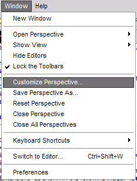
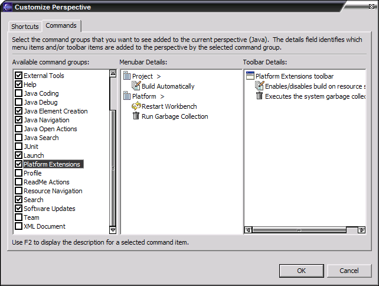

- Click on Window -> Customize Perspective...
 - Go to the "Commands" tab, check off "Platform Extensions"
 - Click on "Ok"
I do wish this can be done programatically through an action link
from the welcome page or this help screen, but doing so requires using
an internal API call which I am trying to avoid. The specific API call
is org.eclipse.ui.internal.Perspective.setActionSets().
Hopefully, the Eclipse developers will release it as org.eclipse.ui.IPerspective
in a future version.